|
DE LA DUNES LA IGPC IMPRIMAREA MĂRCILOR POŞTALE ÎN ROMÂNIA |
La începutul anilor 70 eu am cumpărat un clasor într-un magazin al comerţului filatelic de stat din Bucureşti. Amintesc pentru tinerii de toate vârstele şi de pe toate continentele că sub comunism magazinele îi aparţineau statului român.
Motivul pentru care am cumpărat acel clasor nu a fost clasorul în sine, deşi era de o calitate acceptabilă, ci deoarece el conţinea o serie dantelată şi una nedantelată, ambele neuzate, emise de Regatul Yemenit, care reproduceau picturi celebre ale lui Rembrandt. Preţul ansamblului era mare pentru veniturile mele, fiind de circa 100 lei, ceea ce reprezenta cam 8% din salariul meu de fizician. Dar ce nu face omul pentru o pasiune de a lui!
Seria a fost emisă pe 15 mai 1967 şi a comemorat Expoziţia Filatelică AMPHILEX '67 care a avut loc la Amsterdam. La acea vreme eu nu ştiam că această serie de 6 timbre a fost emisă în două versiuni, una cu rama imprimată în aur şi alta cu rama în argint, şi că fiecare versiune a fost însoţită de două coliţe, dantelată şi nedantelată. Seriile sunt catalogate ca Michel 278-283 şi 284-289, iar coliţele ca 37A + B şi A 37 A + B. Mai jos sunt arătate, spre exemplificare, trei valori din serie:
 |
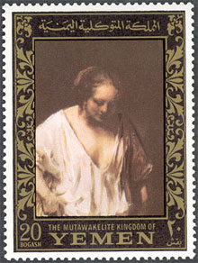 |
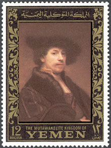 |
M-am cam mirat eu atunci că la magazinul filatelic am putut cumpăra "la liber" mărci poştale străine, în serii complete neuzate, deoarece acest privilegiu era acordat numai pentru mărci din ţările socialiste, în abonament, unor membri "influenţi" din Asociaţia Filatelică Română. Un filatelist mai luminat m-a lămurit mai târziu că aceste timbre erau tipărite de fapt în... Republica Socialistă România.
Într-adevăr, atunci am observat că tehnologiile de imprimare ale acestor timbre seamănă cu cele tipărite pentru poşta română. Vă invit să le comparaţi cu nişte reproduceri de pictură emise de asemeni în 1976 de Poşta Română. Seria de 6 timbre arătată mai jos, din care eu prezint doar trei valori, a fost emisă pe 30 martie 1967. Este vorba de Scott 1907 - 1912. Timbrele se aseamănă bine între ele, nu-i aşa?
|
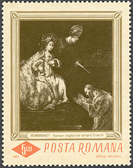 |
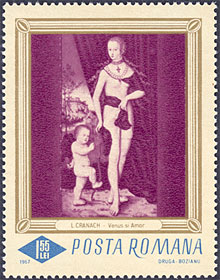 |
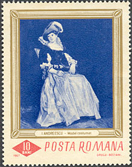 |
Să ne despărţim acum de Yemen şi să ne concentrăm atenţia asupra unei serii emise de Fujeira pe 15 noiembrie 1970, Michel 559 - 573. Data nu este menţionată de Michel, dar noi putem să o citim de pe timbrul de mai jos (de obicei aceste timbre au imprimate pe ele ştampila de primă zi a emisiunii). Ar fi de menţionat că Michel este singurul catalog mondial care listează în ansamblu şi dă valorile pentru aceste aşa numitele Dunes. Timbre amplu ilustrate ?i irelevante pentru emiratele din care se presupunea ca le vin sunt cunoscute sub numele de "dunes". Proliferarea lor excesivă le-a devalorizat rapid. Din acest motiv, multe cataloage cunoscute nu le listează.
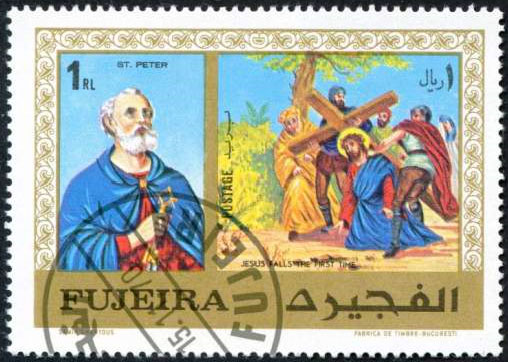
Vă invit să citiţi în partea de jos, în dreapta, numele imprimeriei: "Fabrica de timbre Bucuresti". Mai jos vă prezentăm încă un timbru, care face parte din aceiaşi lungă serie:
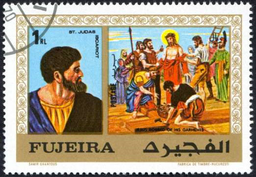
Acest timbru este interesant pentru mai multe motive. Aşa cum a observat Rodney, de pe newsgroup-ul RCSD (mersi pentru scanurile Fujeira şi Ciad), este ciudat ca Iuda Iscariotul să fie onorat pe un timbru cu un titlu de sfânt. În realitate, acest Iuda a fost probabil confundat cu Sfântul Iuda, unul dintre cei Doisprezece Apostoli ai lui Isus. Desigur că nu putem să ne aşteptăm ca designerul, Dl. Samir Ghantous (un artist din Liban?), sau cei care i-au comandat lucrarea, să se priceapă la asemenea "subtile" diferenţe.
Dacă comparăm această serie cu una emisă de poşta română, chiar dacă nu este neapărat necesar, numele imprimeriei fiind specificată pe timbru, constatăm din nou asemănări.
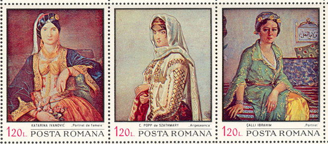
Deasupra vă arătăm jumătatea de jos a coliţei dedicate expoziţiei filatelice Balcanfila III, care a avut loc la Bucureşti între iunie 27 şi iulie 2, coliţă emisă pe 25 mai 1971, Scott 2247 a-f. Instalaţia de imprimare a fost între timp înlocuită cu una mai modernă, dacă e să o comparăm cu ceea ce s-a imprimat în 1967. Din fericire culorile coliţei româneşti sunt mai puţin stridente decât cele ale seriei tipărite pentru Fujeira.
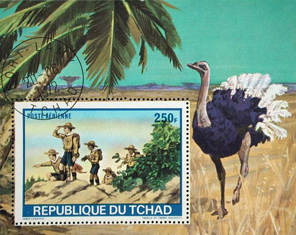
Mai sus vă prezentăm o altă coliţă, pe care o datorăm aceluiaşi grafician, şi care a fost tipărită de aceeaşi Fabrica de timbre Bucuresti. Ea a fost emisă pe 15 mai 1972, în numele Republicii Ciad. Această coliţă cu tema "cercetaşi" este listată în Scott ca C120. În Michel, care listează şi dă valori la aproape orice, această coliţă apare ca Block 39A. Data emiterii seriei şi coliţei, după Michel, ar fi fost tot 15 mai 1972.
Ar fi de menţionat că preşedintele Tombalbaye, care decidea cine primea contractele pentru timbre, este cunoscut pentru că a arestat nişte tovarăşi de ai săi din guvern, deoarece aceştia ar fi folosit magia pentru ca să îl răstoarne de la putere. Numele capitalei, Fort-Lamy, aşa cum apare el pe ştampilă, a fost schimbată de Tombalbaye, pe 6 aprilie 1973, în N'Djamena, când el şi-a schimbat şi propriul său nume în Ngarta, ambele acţiuni fiind promovate în numele unei aşa-zise "authenticité".
Ce putem spune astăzi este că guvernul comunist român a contribuit pe scară largă la răspândirea de Dunes şi de alte timbre dubioase, ceea ce a fost începutul pervertirii în masă a emiterii de timbre poştale, fapt care a subminat încrederea multor colecţionari în filatelie. Guvernul român al epocii a făcut-o cu complicitatea unor afacerişti fără scrupule aflaţi în Vest, ajutaţi şi de unii editori de cataloage, care au contribuit la derutarea generalizată a colecţionarilor. Pentru guvernul român imprimarea timbrelor dubioase, ca şi comercializarea în Vest a timbrelor româneşti (unele coliţe fiind destinate numai străinătăţii), o fost încă o sursă de valută "curată", care a putut fi folosită împotriva intereselor aceluiaşi Vest, de unde proveneau imprimeriile şi banii, dar şi pentru a finanţa stilul luxos de viaţă al nomenclaturii proprii.
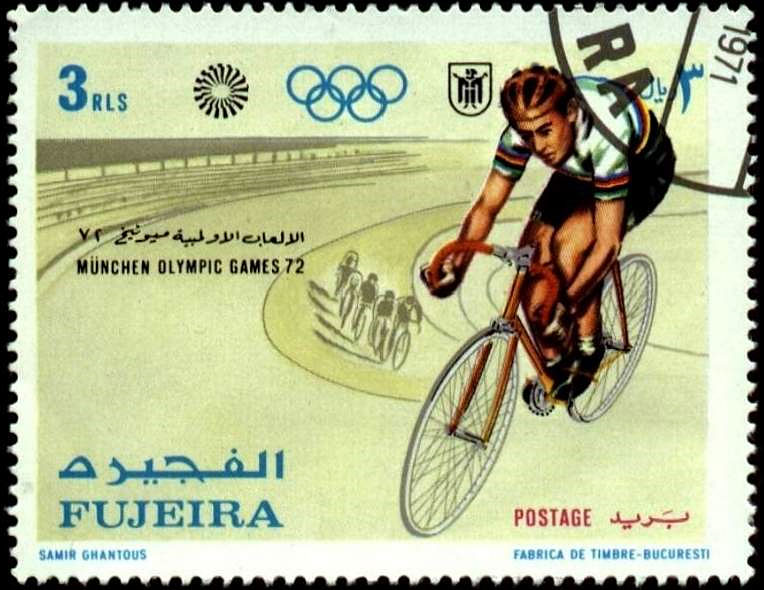
Vă prezentăm mai jos un alt exemplu, coliţa Fujeira S/S, Michel Block 84A, Capete de cai, emisă (după Michel 2013) pe 15 octombrie 1971.
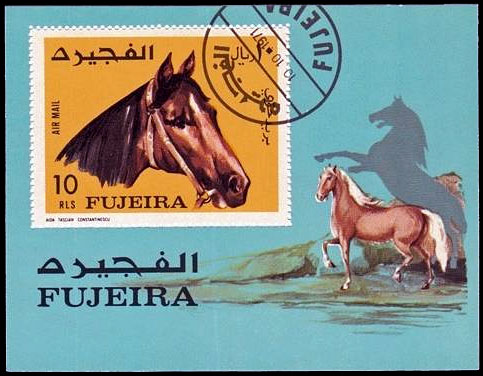
Ceea ce este cu mult mai interesant este numele machetatoarei, artista română Aida Tasgian Constantinescu, care este binecunoscută, deoarece a creat o mulţime de timbre emise de Poşta Română.
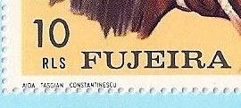
Există asemănări între acea situaţie şi ceea ce se întâmplă în prezent, deoarece între timp România a devenit un aşa numit Client Nation a lui Inter-Governmental Philatelic Corporation (IGPC). Ca mulţi dintre clienţii lui IGPC, Romania emite de la o vreme un număr foarte mare de mărci poştale şi coliţe, câteodată apropiindu-se de recordurile în materie ale unor ţări precum Liberia, Gambia or Grenada-Grenadines. Într-o comparaţie europeană Romania este plasată de asemeni într-o poziţie de vârf. Conform site-ului oficial WNS , administrat de către UPU, numai în anul 2007 România a emis un număr total de 105 timbre, ceea ce este mult în comparaţie cu ce au emis în acelaşi an ţări europene mult mai mari, precum Ucraina: 93, Spania: 86, Rusia: 57sau Polonia: 47.
Putem afirma cu certitudine că "vremurile de aur" ale trecutului glorios al supraproducţiei de timbre poştale au revenit. Aceasta a devenit posibil datorită noului echipament de imprimare Heidelberg, achiziţionat în anul 2004 de către Tipografia Posta Romana, succesoarea Fabricii de timbre Bucureşti. Este vorba de un echipament asistat de calculator care reduce timpul de procesare a comenzilor de la câteva zile la câteva ore. Linia de producţie, cea mai eficientă din Europa Centrală, a redus costurile de producţie de 3 ori, crescând viteza de imprimare cu acelaşi factor, chiar dacă numărul de culori a fost crescut de la 4 la 6. Sursa: declaraţia fostului Ministru al comunicaţiilor şi tehnologiei informaţiei, Dl. Dan Nica, Curierul Naţional, 7 iulie 2004.
Actualizare 2018. Editorii Catalogul Scott / revista Linns compileaza anual numarul mărcilor emise şi costurile faciale ale acestora pentru aproape toate ţarile lumii. În tabelul de mai jos reproducem cifrele pentru România şi Olanda, dupa cum urmeaza:
Putem deduce că numarul de mărci emise în România de Administraţia Poştala (AP) a crescut cu aproape jumatate şi că valoarea nominala a acestora aproape că s-a triplat între anii 2011 - 2016. Pentru comparaţie, afişăm aceleaşi date pentru AP din Olanda (o ţară cu aproximativ aceeaşi mărime de populaţie ca cea a României), care a emis în 2016 de cinci ori mai puţine mărci decât cele emise în România şi cu mai puţin de jumatate din valoarea nominala totală. Diferenţa este uimitoare, având în vedere faptul că Olanda are un nivel de trai mult mai ridicat decât România.
Numărul mare de emisiuni poate fi explicabil prin faptul că România este un client al lui IGPC, o agenţie care emite sau a emis mărci postale pentru ţări precum Gabon şi Sierra Leone, cunoscute pentru numărul mare de mărci şi care sunt clasate de Federaţia Internaţională de Filatelie (FIP) în categoria de mărci abuzive.
Published: 04/18/2009. Revised: 02/10/2018 |
Click the banner above to visit the site |